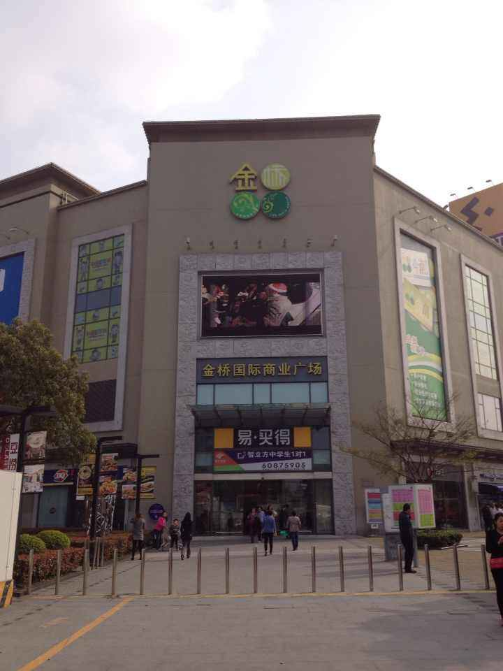
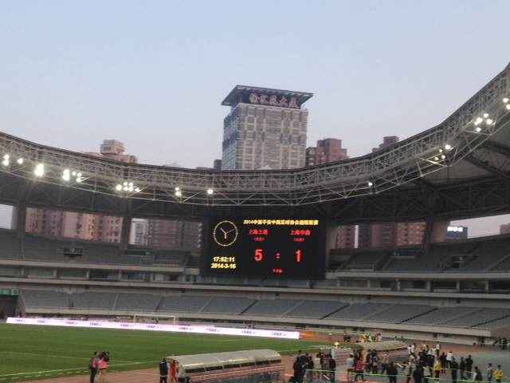

三月份去上海理工大学见素未蒙面大哥，顺便让大哥带着在金桥吃了顿湘菜，大哥的恩情永世难忘。然后紧接着回公司就是给金桥的官网做修改，就在这些细小的任务中个人的技术能力得到了增长


我前面的熊孩子一直在问他老爸:武磊进球了吗？武磊进球了吗？那场比赛吕文君一记倒钩破门后冲向教练席竖起了中指，随后就被禁赛N场。后来徐根宝来了，老上海球迷一下就认出来了他，看来上港虽然是中超新军但是由于是徐根宝带起来的缘故还是吸引了不少老申花球迷